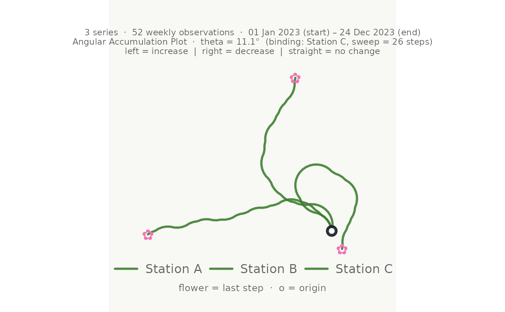
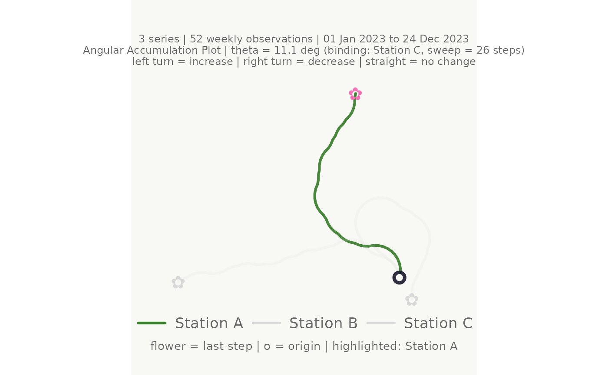
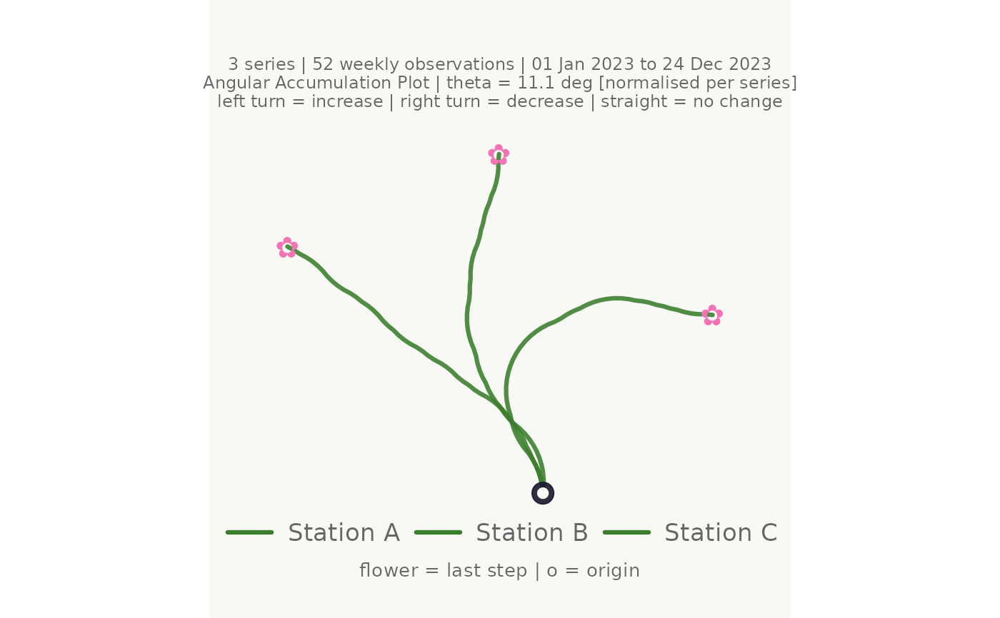

Angular Accumulation (Flower Bouquet) Plot for Time Series
Source:R/make_plot_bouquet.R
make_plot_bouquet.RdDraws each time series as a turtle-graphics path from a shared origin, encoding the binary direction of consecutive changes as fixed-angle turns: an increase turns the heading left by \(\theta\) and a decrease turns it right by \(\theta\). No change continues straight ahead. Because all series share the same origin and angle, the visual similarity of paths directly reflects the similarity of fluctuation patterns across series.
Usage
make_plot_bouquet(
data,
time_col = 1,
series_col = 2,
value_col = 3,
stem_colors = "#3a7d2c",
flower_colors = "#f472b6",
facet_by = NULL,
ceiling_pct = 0.8,
launch_deg = 90,
marker_every = NULL,
show_rings = FALSE,
dark_mode = FALSE,
title = NULL,
subtitle = NULL,
hide_legend_after = 10L,
lon_col = NULL,
lat_col = NULL,
map_width = 0.35,
coord_crs = NULL,
cluster_hull = NULL,
hull_coverage = 1,
blend = TRUE,
highlight = NULL,
from = NULL,
to = NULL,
normalise = FALSE,
verbose = FALSE
)Arguments
- data
A long-format data frame or tibble with at minimum a time column, a series identifier column, and a numeric value column. Additional factor or character columns may be referenced by
stem_colors,flower_colors,facet_by, andcluster_hull.- time_col
<
tidy-select> The time index column. Defaults to the first column.- series_col
<
tidy-select> The column identifying each individual time series. Defaults to the second column.- value_col
<
tidy-select> The numeric value column. Defaults to the third column.- stem_colors
Controls the colour of the time series lines. Four options are accepted:
A single hex string – all lines share that colour. Default:
"#3a7d2c"(plant green).A character vector of hex strings, one per series – recycled with a warning if too short.
"greens"– distinct shades from a curated palette of natural greens.A bare column name in
data– each series is coloured by that column's value using perceptually uniform colours.
- flower_colors
Controls the colour of the end-of-series flower symbols. Same four options as
stem_colors. The keyword is"blossom". Default:"#f472b6"(warm pink).- facet_by
<
tidy-select> Optional bare column name. When supplied the plot is split viaggplot2::facet_wrap().NULL(default) = single panel.- ceiling_pct
A single number in
(0, 1]. Fraction of the theoretical maximum angle to use as \(\theta\). Default0.80.- launch_deg
Initial heading in degrees (counter-clockwise from positive x-axis).
90= straight up. Defaults to90.- marker_every
Positive integer. A dot is plotted at every
marker_every-th step.NULL(default) = no markers.- show_rings
Logical. Draw faint concentric reference rings. Default
FALSE.- dark_mode
Logical.
TRUE= dark navy background. DefaultFALSE.- title
Plot title string.
NULL(default) = no title.- subtitle
Subtitle string.
NULL(default) = auto-generated summary of theta, binding series, time range, and interval.- hide_legend_after
Positive integer. Legend is suppressed when
n_series >= hide_legend_after. Default10.- lon_col
<
tidy-select> Optional bare column name for longitude. Must be paired withlat_col. When both are provided a location map is attached to the right via patchwork.- lat_col
<
tidy-select> Optional bare column name for latitude. Seelon_col.- map_width
Relative width of the map panel as a fraction of the combined figure width. Only used when coordinates are supplied. Default
0.35.- coord_crs
Integer EPSG code or
NULL. CRS oflon_col/lat_col.NULL= auto-detect from coordinate magnitude. Decimal-degree WGS84 coordinates require no reprojection.- cluster_hull
<
tidy-select> Optional bare column name containing cluster labels (e.g. theclustercolumn produced bycluster_bouquet()). When supplied and a location map is shown (vialon_col/lat_col), a smooth concave hull is drawn around each cluster's map points usingggforce::geom_mark_hull()from the ggforce package. Hull fill colour matches the cluster'sflower_colors.NULL(default) = no hulls.- hull_coverage
A single number in
(0, 1]. Fraction of each cluster's points (those closest to the cluster centroid) included when computing the hull. Values below1exclude outlier points so the hull focuses on the cluster's core area, which is useful when many clusters overlap. Default1= all points.- blend
Logical. When
TRUE(default) and the ggblend package is installed, cluster hull fills are composited with the"lighten"blend mode and map points with"multiply", giving perceptually richer colour mixing where hulls and points overlap. Falls back silently to normal alpha blending when ggblend is not available. Only affects the map panel; has no effect when no location map is shown.- highlight
A character vector of series names to emphasise. All other series are drawn in a pale grey at low opacity.
NULL(default) = all series equally prominent.- from
Optional scalar of the same class as
time_col. Observations before this value are dropped before computing paths.NULL= no filter.- to
Optional scalar of the same class as
time_col. Observations after this value are dropped.NULL= no filter.- normalise
Logical. When
TRUE, each series is assigned its own per-series \(\theta\) so that every series uses the full angular range independently of how volatile it is. This makes shape comparison easier when series have very different volatility. WhenFALSE(default) all series share a single global \(\theta\) derived from the most volatile series.- verbose
Logical. Print angle diagnostics to the console. Default
FALSE.
Value
A bouquet_plot object. When lon_col and lat_col are NULL,
the underlying object is a ggplot2::ggplot. When coordinates are
supplied, it is a patchwork object (bouquet
left, map right). Both are wrapped in the bouquet_plot S3 class which
provides an informative print() header and a format() method. All
operations that work on ggplot/patchwork (e.g. ggsave(), +) continue
to work.
Details
Input format
data must be in long format: one row per time step per series. Series
should share the same time index values and have equal length.
Algorithm
For each series, the signed first difference is binarised to \(+1\)
(increase), \(-1\) (decrease), or \(0\) (no change). The heading at
step \(i\) accumulates via base::cumsum(); coordinates follow as
\(x_i = \sum \cos(h_k)\), \(y_i = \sum \sin(h_k)\).
See also
cluster_bouquet() to group series by directional similarity
before plotting. save_bouquet() for convenient export.
make_plot_bouquet_interactive() for a plotly hover tooltip version.
Examples
# \donttest{
set.seed(42)
n <- 52
weeks <- seq(as.Date("2023-01-01"), by = "week", length.out = n)
season <- sin(seq(0, 2 * pi, length.out = n))
gw_long <- tibble::tibble(
week = rep(weeks, 3),
station = rep(c("Station A", "Station B", "Station C"), each = n),
region = rep(c("North", "North", "South"), each = n),
level_m = c(
8.5 + 0.8 * season + cumsum(rnorm(n, 0.00, 0.18)),
7.2 + 0.5 * season + cumsum(rnorm(n, 0.02, 0.22)),
9.1 + 1.1 * season + cumsum(rnorm(n, -0.01, 0.15))
)
)
# Minimal call
make_plot_bouquet(gw_long,
time_col = week, series_col = station, value_col = level_m)
#> <bouquet_plot> 3 series | theta = 11.1 deg | binding: Station C

# Highlight one station; others are dimmed
make_plot_bouquet(gw_long,
time_col = week,
series_col = station,
value_col = level_m,
highlight = "Station A")
#> <bouquet_plot> 3 series | theta = 11.1 deg | binding: Station C

# Normalised mode: each series uses the full angular range
make_plot_bouquet(gw_long,
time_col = week,
series_col = station,
value_col = level_m,
normalise = TRUE)
#> <bouquet_plot> 3 series | theta = 11.1 deg | binding: Station C [normalised]

# }